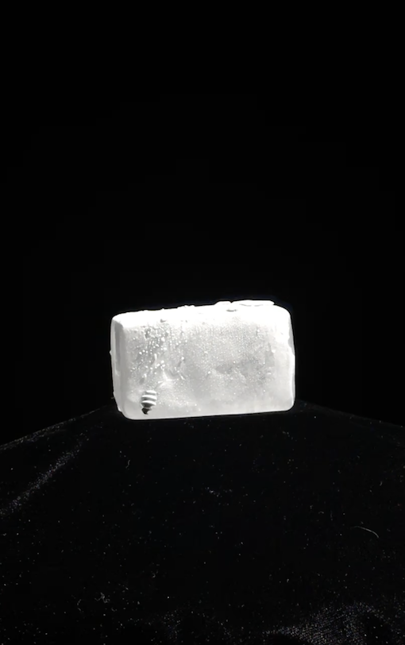
Listen to What Stays
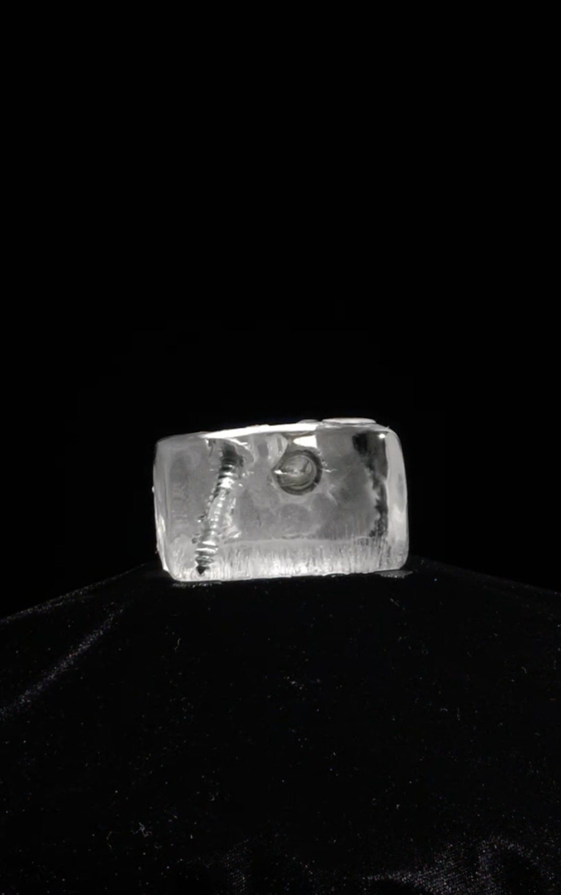
About What Stays
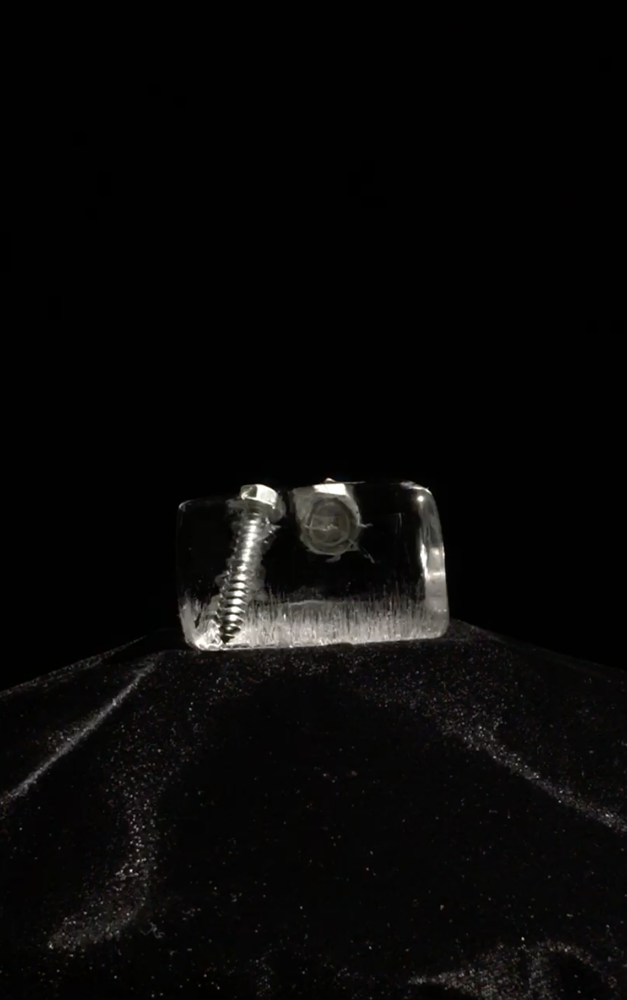
Cover Art
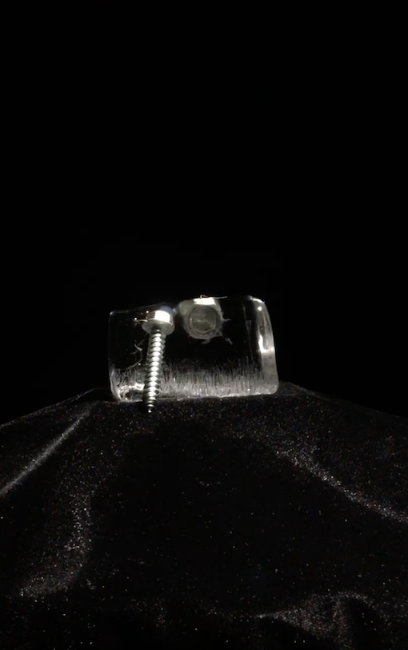
Spotify Canvasses
The past few years have been a coming-to, a slow uncovering of a universal truth that is particularly true for me: the longer you live, the more life there is to forget. I have very few true memories— I know the story of my life the way I know loved one’s phone numbers, the names of flowers, or the words to my favorite songs. This relation to the past, dry and detached as it may be, mimics the function of memories well, pushing them out and obscuring their absence. What Stays is both an observer and an agent of how I create my past. This album watches as I construct my personal history, and it is through making it that I become consciously aware of that process. And What Stays is itself a part of the past I build: in its completion, What Stays is the most vivid, truthful stand-in for knowing my life as it once happened.
If writing these songs is what led me to realize how little I remember, reflecting on them has made me understand this grief as something fundamental to the human condition. We all desire a complete and embodied understanding of our lives. We all lose the present moment as it instantly, eternally, and ceaselessly vanishes. We all forget, and we all remember things to be different than they actually were. Worst of all, however warped our own memories, we are infinitely less able to inhabit the experiences of others, past and present. The title track of What Stays, one of the last songs I wrote for this album, grieves the loss of both my own life as it passes, and the lives of the people I love, which I can never come close enough to knowing: “Your noon sun slips behind my mountain/A day swells and is gone/Thrown out to the dogs to join/A growing wake/I can’t see clearly/So please show me/Show me what stays”
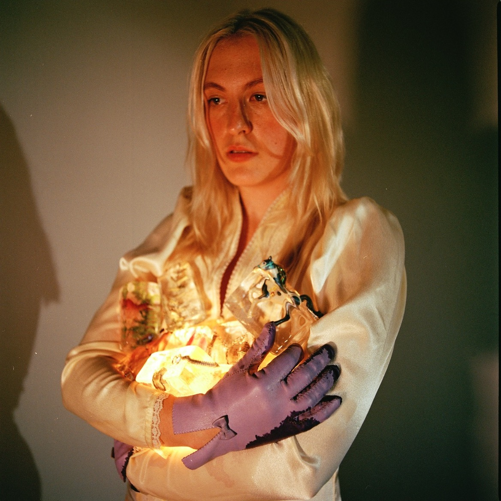


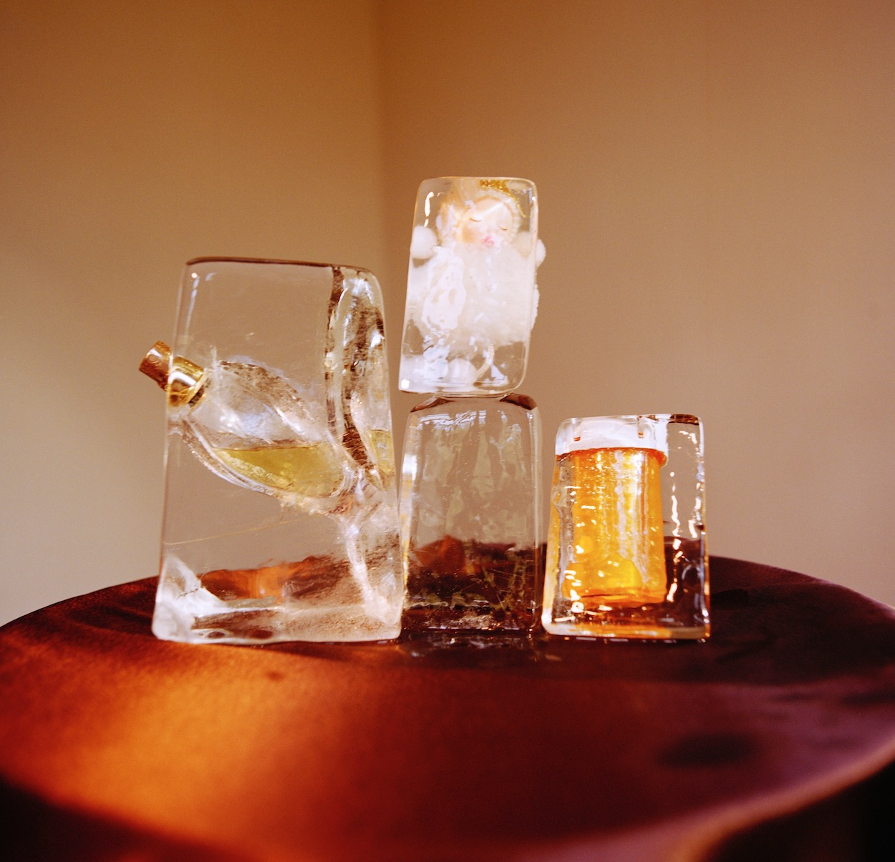
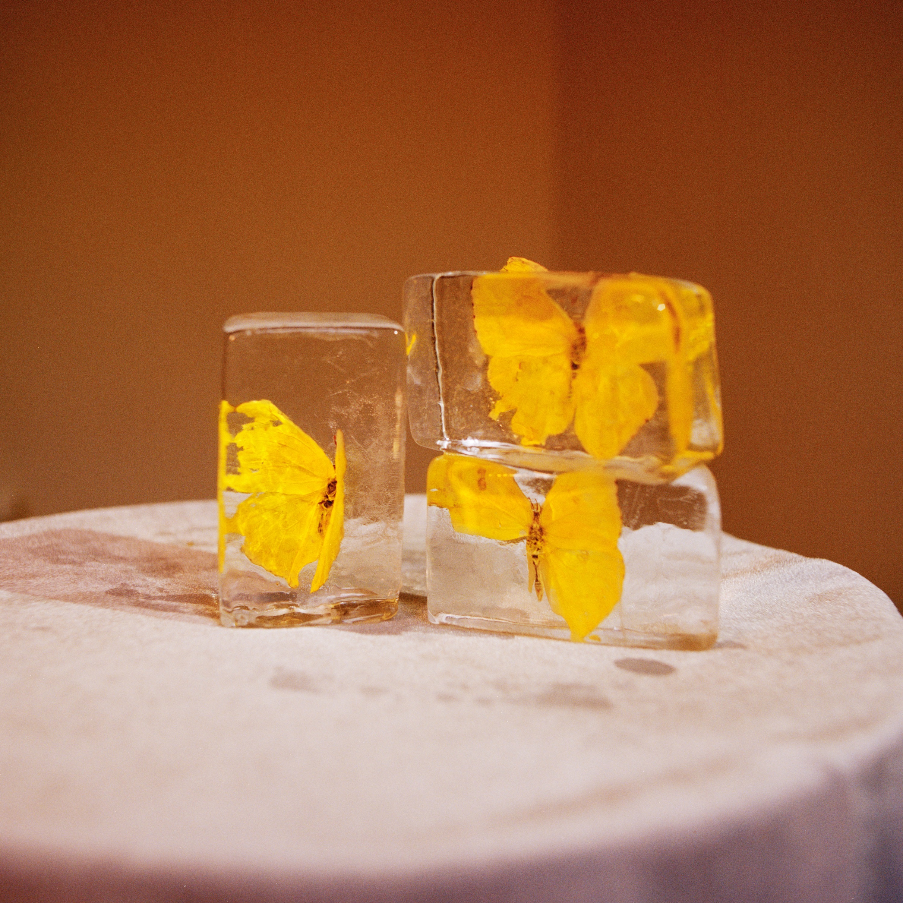
What Stays was self-recorded in December 2020 at a cabin near Crater Lake, Oregon. It was written, engineered, and produced by me, Kati Malison. My bandmates, Lewis Brown and Max Holbrook, were collaborators in the truest sense, and contributed in far more ways than credits can convey. I wouldn’t have been able to manage the technical side of making this album without the advice of Heather Jones and Bradford Krieger. What Stays was mixed by Peter Geiser and mastered by Brandon Peralta.
Kati Malison: lead vocals, backing vocals, guitar, bass, synth
Lewis Brown: lead guitar, drums, edrums, synth, backing vocals
Max Holbrook: bass, guitar, keys, synth, backing vocals
Pepe Hidalgo: drums (tracks 6 & 10)
Sophie Goldberg: backing vocals (tracks 9 & 10)
Heidi Aispuro: horns (track 12)
Peter Geiser: mixing, edrums
Brandon Peralta: mastering
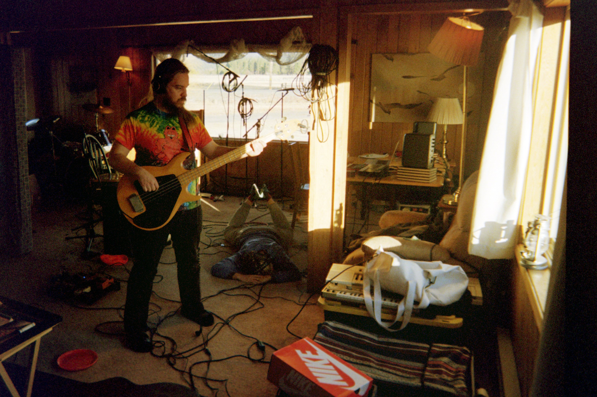
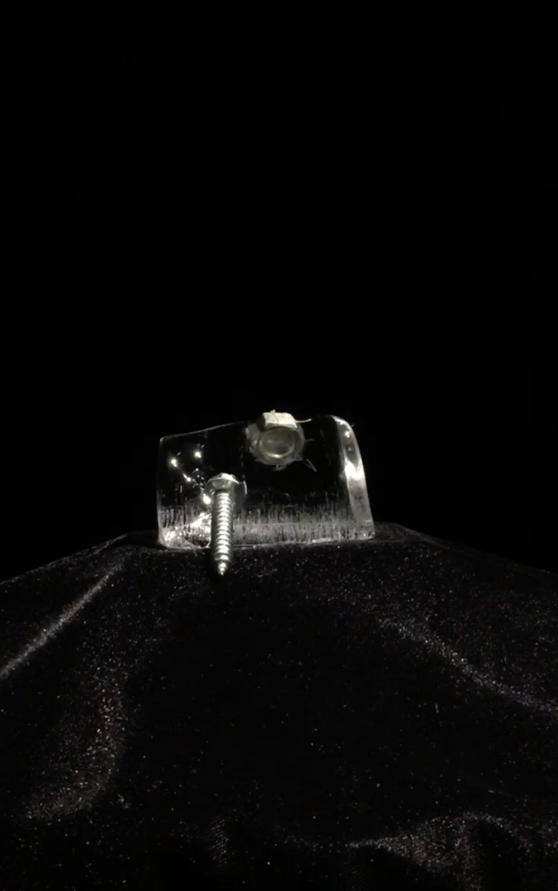
Video for A Light
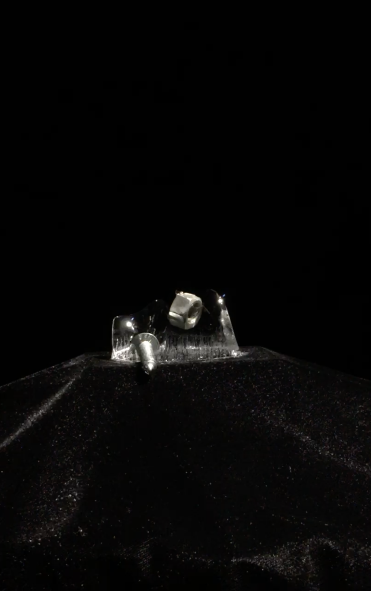
Video for Mirrors
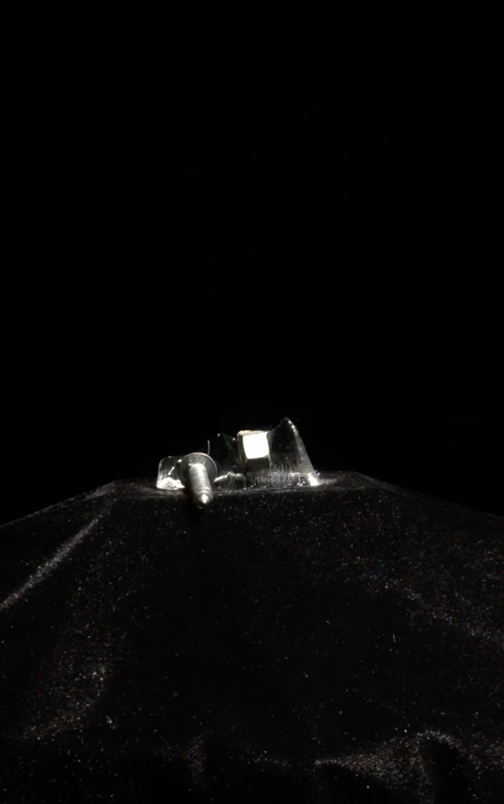
Crater Lake/LP2
 Credits
Credits